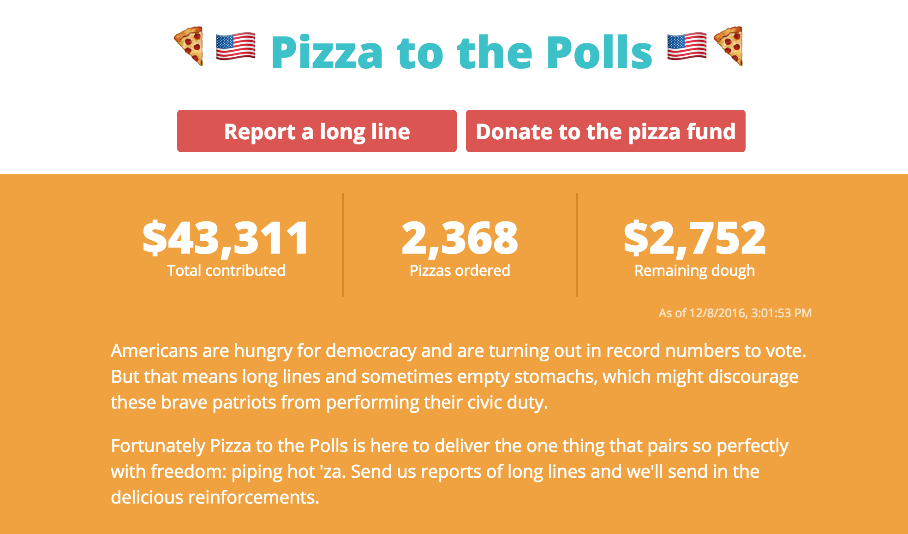
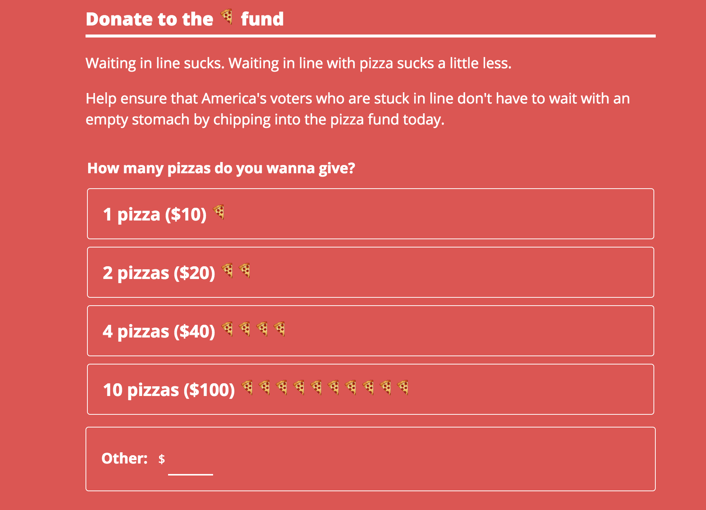
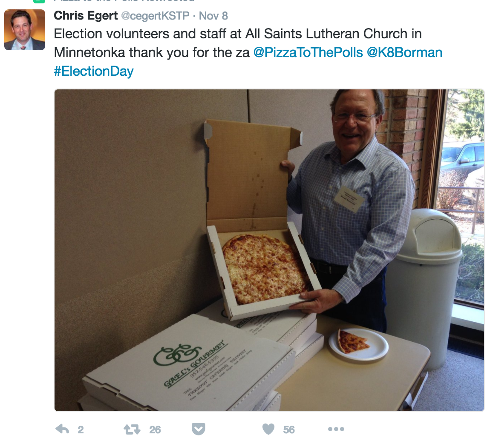
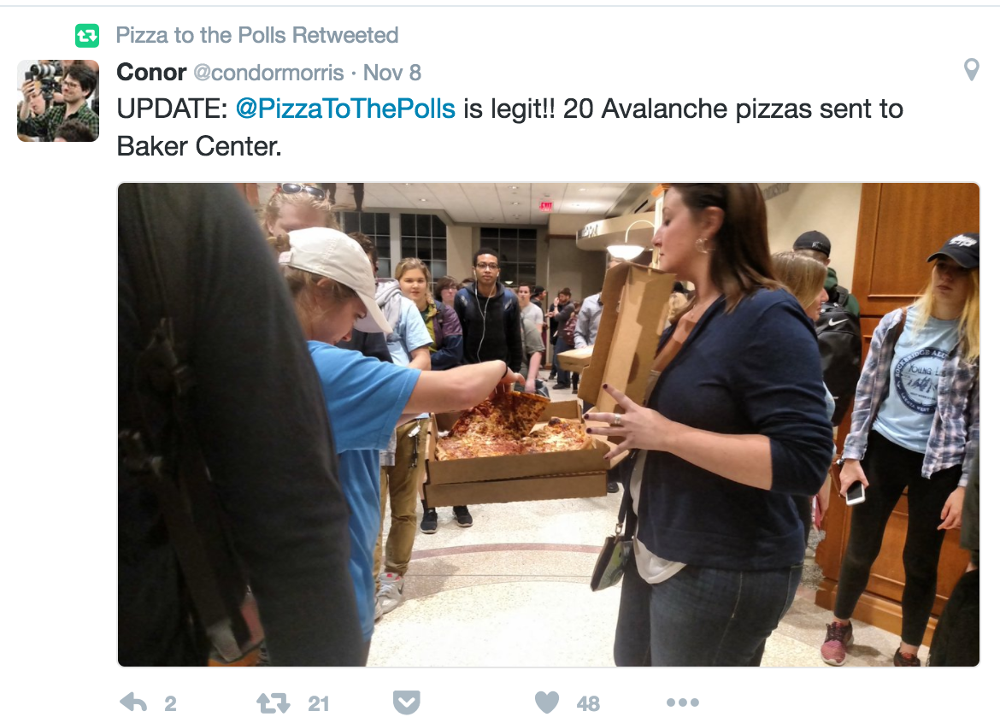
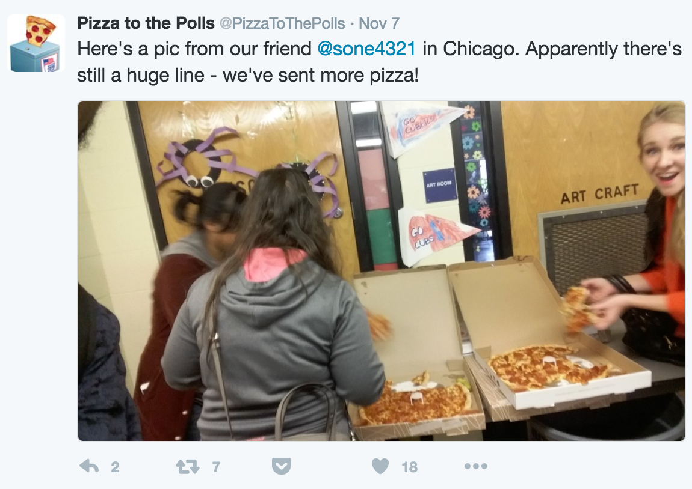

Specimen Nº 01 · Habitat I — Democracy & elections
Pizza to the Polls
Feeding voters (and poll workers) stuck in long lines — because democracy shouldn't come with a rumbling stomach.
- Habitat
- Polling places, U.S.
- First observed
- November 8, 2016
- Range
- 48 states (2020 cycle)
- Diet
- Donations & democracy
- With
- Noah Manger · Katie Harlow · volunteers in the US, UK & Australia
- Status
- Operating — polls.pizza
During the run-up to the 2016 election there were numerous reports of long voting lines across the country — I wanted to find a way to help hungry voters (and poll workers) everywhere. Working with Noah Manger, we created a simple website, hosted on GitHub, to take reports of long polling lines and send pizza to them.
In the 72 hours between launching the site and election day, we raised $43,310.85 from 1,730 donors and spent $40,558.51 sending over 2,368 pizzas to 128 polling places across 24 states — with over a million impressions through our Twitter account.
Generated press coverage from The Huffington Post, People, Variety, Fox News, The Independent, Eater, KGW, the Willamette Week, and The New York Times. Four years later: $1.46M raised, 66,000+ pizzas, 3,263 polling places in 48 states.
The original site was a simple HTML page — hosted on GitHub and secured with CloudFlare — which sent sign-ups to a Google Doc and processed credit cards with Stripe Checkout. It was rebuilt in 2020 in StencilJS, hosted on S3 with CloudFront, backed by an ExpressJS API running on AWS Lambda.
Measurements
Plates · from the field





Field notes